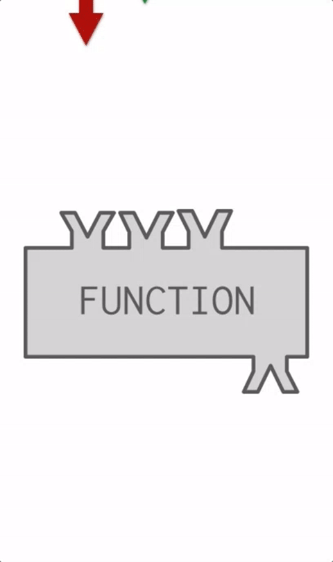
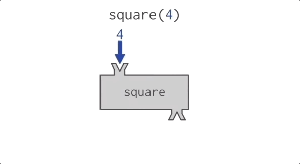
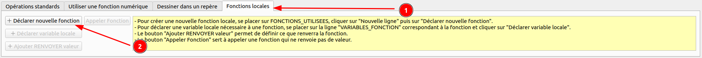
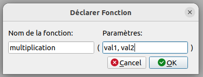
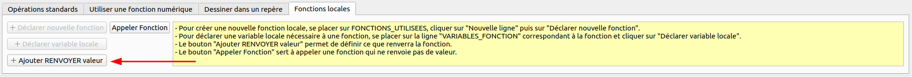
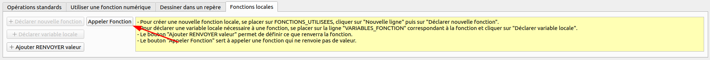
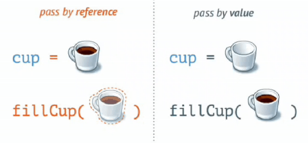

Une fonction est un bloc d'instructions qui peut être appelé plusieurs fois dans un programme.
Les fonctions permettent de réutiliser du code et de le rendre plus lisible.
Les fonctions peuvent prendre des paramètres et retourner des valeurs.


Pour créer une fonction sur AlgoBox, il faut ajouter une ligne dans le bloc FONCTIONS_UTILISEES
puis dans l'onglet Fonctions locales, cliquer sur le bouton suivant :

Ensuite, une fenêtre modale va s'afficher pour saisir le nom de la fonction et ses éventuels paramètres :

Il faut ensuite écrire les différentes instructions dans la fonction et, éventuellement, retourner une valeur.
Pour retourner une valeur, il faut cliquer sur le bouton suivant :

Lorsqu'une fonction retourne une valeur, l'exécution du code de la fonction s'arrête
(même si d'autres instructions sont positionnées sous l'instruction RENVOYER).
Il est ensuite possible d'appeler une fonction en cliquant sur le bouton suivant :

Il est également possible d'appeler une fonction dans les instructions AFFECTER valeur à variable,
AFFICHER Variable, AFFICHER Message et AFFICHER Calcul.
Voici un exemple d'algorithme utilisant une fonction permettant d'effectuer une multiplication :
Il est possible de définir une valeur par défaut pour un paramètre. Ainsi, si le paramètre n'est pas renseigné lors de l'appel de la fonction, la valeur par défaut sera utilisée.
Pour définir une valeur par défaut, il faut ajouter le signe = suivi de la valeur par défaut
après le nom du paramètre.
Par exemple :
Les variables déclarées dans une fonction sont locales à la fonction. Elles ne sont donc pas accessibles en dehors de la fonction.
Les variables déclarées en dehors d'une fonction sont globales et sont (parfois) accessibles dans toutes les fonctions (c'est le cas en JavaScript, mais pas en PHP par exemple).
Exemple :
Ici, l'affichage de la variable locale depuis le programme principal ne fonctionnera pas.
Lorsqu'une fonction est appelée, les paramètres sont copiés dans des variables locales. Il est donc possible de modifier les paramètres sans modifier les variables passées en paramètre.
Pour modifier les variables passées en paramètre, il faut utiliser le passage par référence.

Écrire un algorithme qui demande un nombre à l'utilisateur et affiche sa décomposition en produit de facteurs premiers.
Par exemple :
Créer un programme permettant de retrouver l'adresse du réseau.
Le programme doit demander à l'utilisateur de saisir une adresse IP et un masque de sous-réseau.
Le programme doit ensuite afficher l'adresse du réseau en appliquant un ET logique, en binaire, entre l'adresse IP et le masque de sous-réseau.
Écrire un algorithme qui demande à l'utilisateur de saisir un mot de passe.
Le mot de passe aura un score sur 5 en fonction des critères suivants :
Le score du mot de passe est le nombre de critères respectés.
Le programme doit ensuite afficher le score du mot de passe.
🏅 BONUS : Afficher un message d'erreur pour chaque critère non respecté.
Créer un programme permettant de convertir une couleur écrite en hexadécimal au format RGB.
Le programme doit demander à l'utilisateur de saisir une couleur écrite en hexadécimal (ex : #FF0000).
Le programme doit ensuite afficher la couleur au format RGB (ex : 255, 0, 0).
Le Farkle est un jeu qui se joue avec 6 dés.
Le but du jeu est de marquer le plus de points possible en lançant les dés.
À chaque tour, un joueur peut lancer les dés plusieurs fois, mais doit mettre de côté au moins 1 dé à chaque lancer.
Si, lors d'un lancer, un joueur n'a aucun point, il passe son tour.
Les combinaisons de dés possibles sont les suivantes :